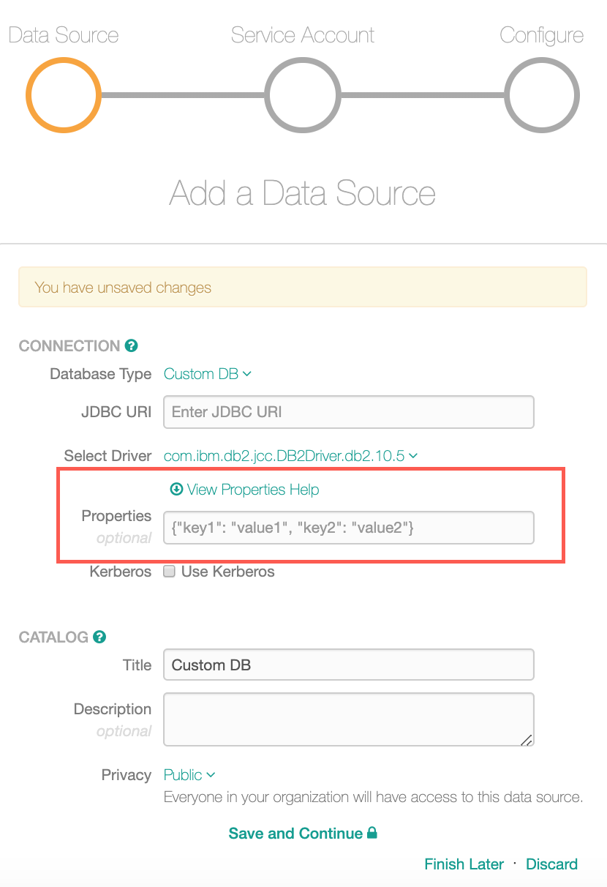
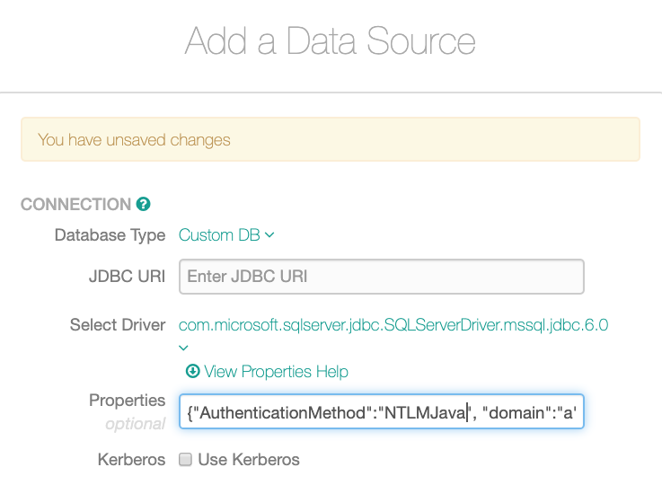
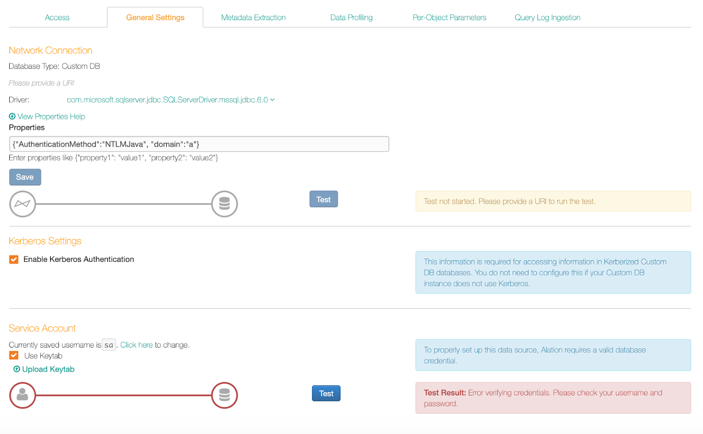
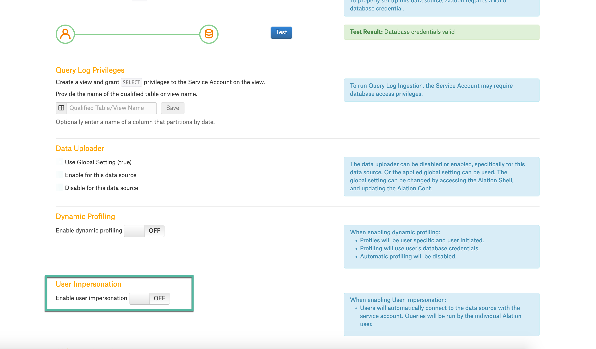
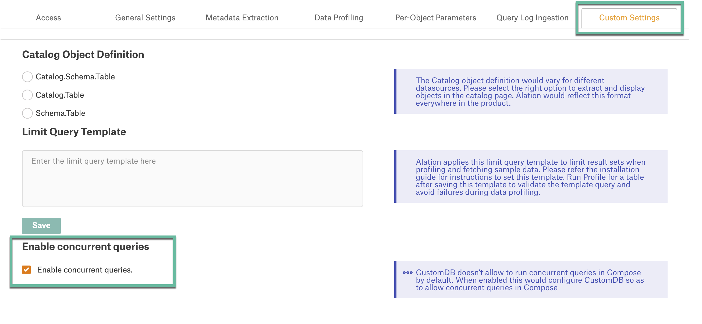

Add Custom DB to Alation¶
Before you proceed to add your Custom DB source to Alation, decide if you are going to use the following features:
Query-based MDE (available from release V R5 (5.9.x)): ability to customize MDE by executing custom queries to extract specific metadata types, down to the column level. Unlike query-based MDE, Alation’s regular MDE for Custom DB will extract all schemas accessible with the service account you provided.
View-based QLI (available from release V R4 (5.8.x)): ability to perform QLI using a view table.
File-based QLI (available from release V R5 (5.9.x)): ability to perform QLI when query logs are stored in log4j format on a file system.
Custom query-based Profiling (available from release 2020.3): ability to profile individual Tables based on custom queries.
To use any of these features, you will have to do some preparations. Query-based MDE, view-based QLI, and custom query-based Profiling will require you to create queries for MDE and file-based QLI will require a JSON file for QLI configuration.
Custom DB source may also support automatic MDE from your data source (full and selective) using the driver you have selected. See Regular MDE for details.
Supported Authentication Methods for Custom DB¶
Starting with V R3 (5.6.x), Alation supports basic database authentication (username/password) for Custom DB. V R4 (5.8.x) adds Kerberos authentication, and starting with V R5 (5.9.x), Alation supports several additional authentication methods:
Kerberos with Keytab
LDAP authentication
Active Directory (AD) authentication
Authentication methods can be set up when you are adding a Custom DB source to the catalog or later, on the General Settings page of the data source settings page.
Note
NTLM authentication for SQL Server works only with jTDS drivers in Alation. This is applicable to all versions of SQL Server. To authenticate with NTLM, make use to select a jTDS driver in Alation.
Required Information¶
To add a Custom DB source to the Alation catalog, you will need the following information:
JDBC URI for the database. If using a custom driver, refer to the driver documentation for the format of the URI for this specific driver.
If using a custom driver, it should are added to the Alation server. See Add Custom Driver.
Kerberos information (if using Kerberos). Kerberos authentication requires to be pre-configured on your Alation server. Make sure it is configured. See Configuring Kerberos for Data Source Authentication.
Note
If using a custom driver, for details on the additional properties that need to be set for Kerberized connection, refer to the JDBC driver documentation.
Keytab (if using Kerberos with keytab)
Service account credentials for Alation to connect to your database. This service account should have enough privileges for establishing the connection with the help of the selected driver.
Note
Alation will use the following methods of the JDBC driver:
getSchemas
getTables
getColumns
getExportedKeys
getPrimaryKeys
getIndexInfo
getTableType
getSearchStringEscape
supportsCatalogsInTableDefinitions
getFunctions
getFunctionColumns
getProcedureColumns
The database service account should be able to access and execute these methods.
Steps in Alation¶
This requires the role of the Server Admin.
In Alation, go to Sources and on the upper-right, click Add then Data Source to open the Add Data Source wizard:
{kind=link}
On the Add Data Source wizard, select Custom DB as the Database Type:
{kind=link}
Enter the JDBC URI for the database without the JDBC tag at the beginning. For example:
datadirect:mongodb://10.11.21.27:27017;DatabaseName=admin;Note that the format of the parameters in the URI will depend on the JDBC driver you are using. Refer to the driver documentation for information about the format of parameters accepted by this driver.Select a driver from the Select Driver drop-down list. If you previously added a custom driver, it should be available in this list for selection.
Note
Make sure to select the correct driver. Built-in drivers available by default in the Select Driver drop-down list may not be able to support the type of authentication that you want to use. In this case you will need to use a custom driver that can support the required authentication method.
(Available from release V R5 (5.9.x)), if you want to use any additional driver properties, refer to the View Properties Help guide for reference and find the parameter that needs to be specified. Parameters can be used to set up AD or LDAP authentication. Provide the required properties in the Properties field:
Note
The View Properties Help is a guide which shows the list of all accepted JDBC driver properties that can be used when connecting to the database. This Help is available on the Add a Data Source Wizard and the General Settings tab too. Based on the choice of the driver, it will display the parameters accepted by the selected driver.
The View Properties Help has the following information:
Name of the property: Example:
loglevelChoices for the property. Example:
0,1,2.Description: Short description of the property.
Also see Properties Help Error Messages.
For example, if you want to set up LDAP or AD authentication, use the View Properties Help for reference and find the parameter that needs to be specified to enable LDAP or AD authentication:
Provide the required properties in the Properties field:
Note
For Teradata database type to be added as a Custom DB, ensure that you add the
LOGMECH=LDAPparameter for LDAP authentication in the URI. Example URI is as follows:
teradata://10.11.21.228/DBS_PORT=1025,COP=OFF,CHARSET=UTF8,LOGMECH=LDAP
{kind=link}
{kind=link}
{kind=link}
If you want to authenticate with Kerberos, select the checkbox Use Kerberos. You can also enable Kerberos later on the General Settings tab of the data source Settings. If you are going to use keytabs, you will be able to upload your keytab later when you complete the configuration on the General Settings tab.
Note
Oracle data sources require an additional parameter for connecting using Kerberos: {“oracle.net.authentication_services”: “(KERBEROS5)”}
Provide the Title, Description, and Privacy information in the Catalog section and click Save and Continue.
The Set Up a Service Account screen of the wizard will open. Provide the service account information and click Save and Continue.
The Configure Your Data Source step of the wizard will open. Click Skip This Step. The data source Settings page will open.
You can now complete the configuration of your source by providing information on each tab of the Settings page.
Properties Help Error Messages¶
The View Properties Help will display an error message if for some reason the properties supported by the driver cannot be retrieved:
Unable to retrieve properties. Check the URI and try again this error occurs when you enter the URI in an incorrect format. To resolve this error, enter the correct URI format: make sure that the parameters in the URI are using the format accepted by this specific driver. For the same database type, different JDBC drivers may accept different parameters for the same functionality. For example:
SSL=true; orisSSL=true; orencryptionMethod=SSL. Refer to the driver documentation as to the correct parameter format. Also check that the URI does not include the JDBC prefix at the beginning. For example:datadirect:mongodb://10.11.21.27:27017;DatabaseName=admin;Selected JDBC driver has not returned any properties this message appears when the selected driver does not return any driver properties. To find out which properties apply, refer to the driver documentation.
Unable to retrieve properties. Connection issue this message appears when there is an issue with the Taskserver. To resolve this error, check if the Taskserver is running. Restart the Taskserver and try again.
Completing the Configuration¶
Access¶
On the Access tab, you can configure the access properties of the data source. See the Access Tab.
General Settings¶
On the General Settings tab, provide the general parameters for your data source. See below for details on connection properties and authentication setup.
{kind=link}
Network Connection¶
Under Network Connection, you can:
Edit the data source URI
Select a different driver
Provide additional properties for the URI in the Properties field (V R5 (5.9.x) and above).
Note
This includes the parameters required for LDAP and AD authentication. Click the View Properties Help to view the parameters supported by the driver. After you have specified the parameters in the Properties field, click Save to save the input.
Test the connection to the database: click Test to validate that the connection can be established. During the test Alation will parse the URI to get the hostname and do a DNS lookup of the host validating that the server is visible to the driver. Network connection test does not check that all the data source properties are configured correctly. Connection test will fail if Alation cannot reach the host, the hostname is incorrect, or if the URI could not be parsed to get the hostname.
Kerberos Settings¶
Under Kerberos Settings, enable or disable Kerberos authentication by selecting or clearing the Enable Kerberos Authentication checkbox.
When Kerberos authentication is enabled, you will see Use Keytab checkbox under the Service Account section. If you want to use keytabs, select this checkbox to enable keytab authentication then upload your keytab using the Upload keytab link.
Service Account¶
Under Service Account, you can change the service account information and enable the use of keytabs.
To enable Kerberos with Keytab authentication, select the Use Keytab checkbox then click Upload Keytab to upload the keytab for the service account you are using.
Test Service Account¶
Click Test in the Service Account section to test if Alation can establish a connection to the database using the provided URI, the service account credentials and connection properties. If this test succeeds, Alation can connect to the database and you can proceed to performing MDE, QLI, Profiling, and using Compose.
The result of the Profiling job is logged in the Job History table at the bottom of the page. Detailed log for the Data Profiling job can be found in the taskserver.log file (/opt/alation/site/logs accessed from the Alation shell).
User Impersonation¶
Available from 2020.3.7
Enable the User Impersonation toggle On to use the keytab authentication for compose. Make sure you add the compose user details in the keytab uploaded and password.
Custom Settings¶
Available from 2020.3
The Custom Settings tab allows you to define:
Catalog Object Definition for MDE
Limit Query Template for Profiling
Please see these respective sections for details.
Continue to Metadata Extraction From Custom DB.
Concurrent Queries¶
Available from 2020.3.7
Enable the Enable Concurrent Queries checkbox to run concurrent queries in Compose. By default Compose does not allow to run concurrent queries. This feature will work only if your data source supports concurrent queries.
